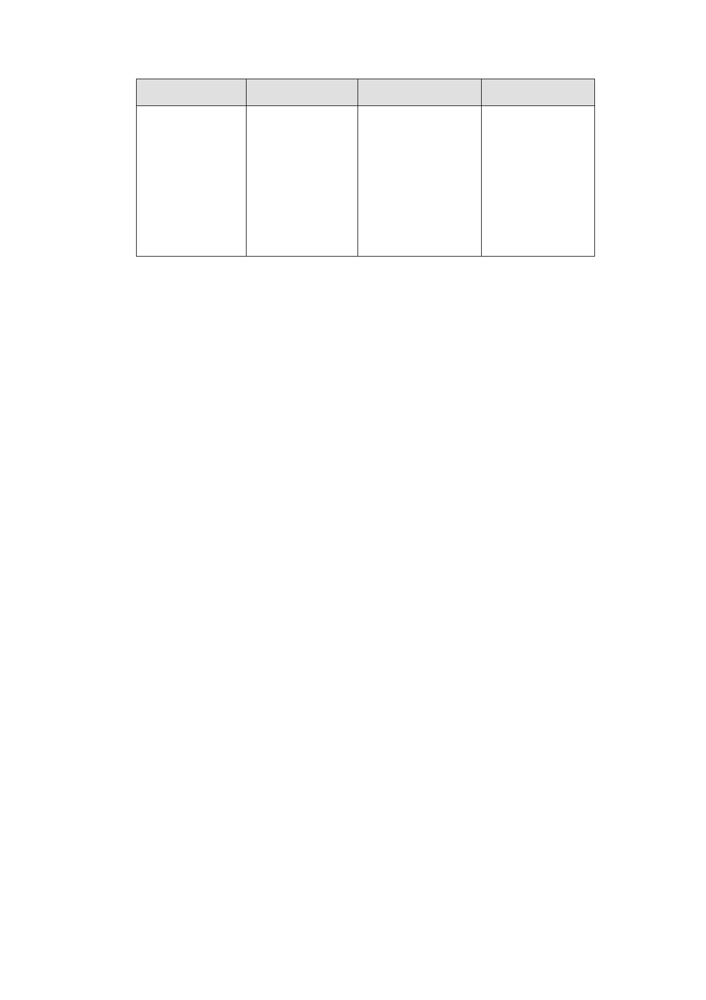

使用分區
使用強度
允許使用
備註
2. 除 部 分 組 別 不 2. 特 定 專 用 區
得 使 用 以 及 建 築 （四）、（五）區
物之第一、二層限 內有公告指定、
供 商 業 及 公 共 使 登錄之古蹟與歷
用外，餘比照臺北 史建築。
市土管自治條例
商三辦理。
2.劃設公園用地、人行步道用地以及變電所用地，部分公
園用地及人行步道用地為計畫變更回饋土地。
3.特定專用區（一）（二）、（三）國有土地部分容積率得
提高至百分之四百，增加之容積應由開發者向臺北市政
府以市價購買，其價金由財政部與臺北市政府各百分之
五十均分。除前開增額容積外，本計畫不得申請任何容
積獎勵及容積移入。
（二）調整更新地區範圍
本計畫區除西北側私有土地外，國有土地復經行
政院核定係採地上物騰空、設定地上權方式開發，已
無辦理都市更新之必要性，故調整都市更新地區範
圍。
（三）回饋計畫
1.特定專用區（一）私有土地部分，應依「修訂臺北市商
業區主要計畫通盤檢討案」相關規定辦理回饋。
2.特定專用區（一）、（二）、（三）國有土地部分，依「修
訂臺北市主要計畫商業區通盤檢討案」內住宅區變更為
第三種商業區規定，應回饋至少百分之 20 土地。
本計畫回饋土地包括主要計畫案內公園及道路用
地，以及本計畫特定專用區（四）、（五）、公園用地及
第 3 頁 / 第 11 頁